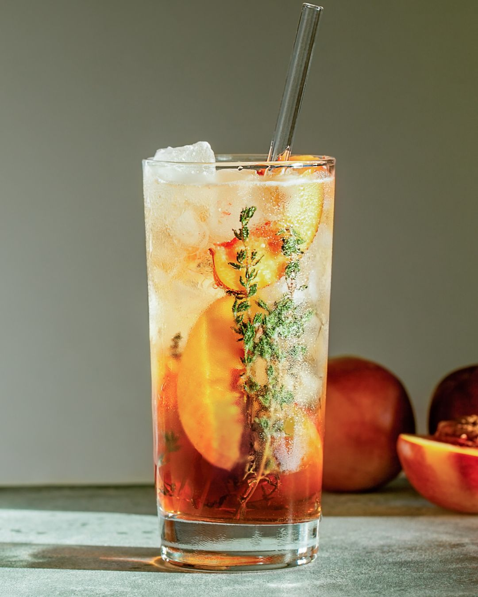

Rooibos Mocktail
Prep Time:
30 mins
Yeild:
4
Ingredients
15 Rooibos tea bags
1 litre cold water
250 ml sugar or sweetener to taste. Xylitol or stevia are good options.
2 litre pineapple juice
1 litre apricot juice
250 ml lemon juice, Bitters to taste
Steps
Make a pot of Rooibos tea and add 15 tea bags.
Add 250ml sugar (or sweetener) to the hot Rooibos and let it cool.
Add cold water, pineapple and apricot juice, as well as the lemon juice and bitters to taste.
Enjoy chilled!